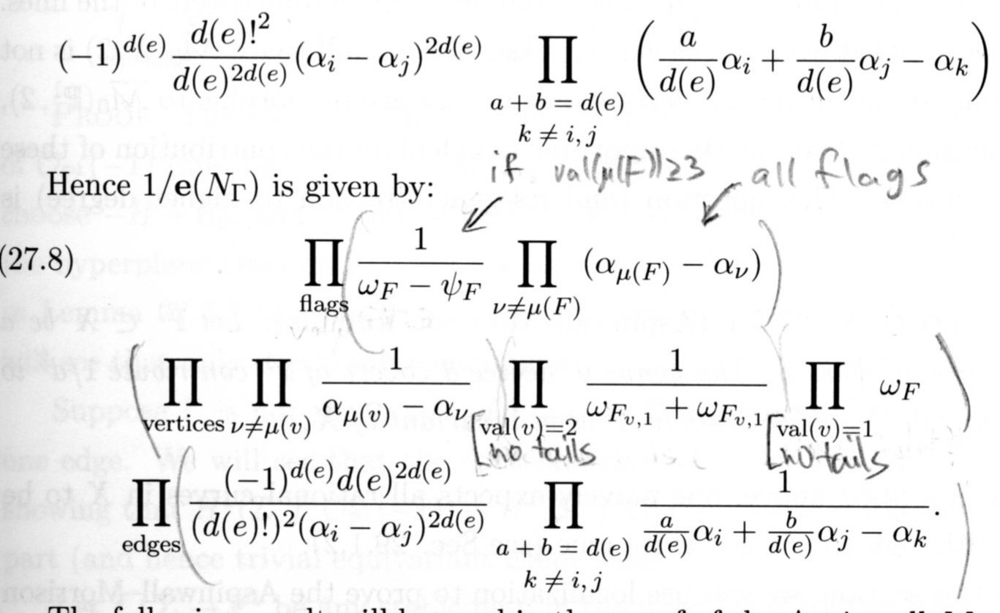

The weighted_fp_contribs module¶
The purpose of this module is to compute the fixed-point contributions to a single even-odd diagram vertex factor.
Recall (see (1)) that the open fixed-point formula is a sum of products of factors of the form \(C_v = \sum A_{\tilde F}\). There’s such factor \(C_v\) for each vertex \(v\) of an even-odd diagram. The main function of this module, weighted_fp_contribs.weighted_fpContrib(), computes the contribution \(C_v\) of such a vertex, so let us now explain what this contribution is.
Notation¶
Write \((X,L) = (\mathbb{C}P^2,\mathbb{R}P^2)\). The circle group \(S^1\) acts on this pair by rotations around an axis which intersects \(L\) at the origin \(p_0\). \(X\) has two additional fixed points, denoted \(p_+,p_-\). The circle action on \(X\) can be extended to an action of the torus group \(T^2\). The circle and torus fixed points in \(X\) are the same, but the torus action does significantly simplify the space of closed holomorphic maps into \(X\), which will be useful to us. Anyway, we have two degree two generators for the equivariant cohomology ring
\(H^*_{T^2} = \mathbb{R}[u,\epsilon]\)
(in the code, \(\epsilon\) is called eps), chosen so that pullback along \(B S^1 \to B T^2\) is given by \(\epsilon \mapsto 0\) and \(u \mapsto u\).
We denote the moduli spaces of stable disk-maps by \(\overline{\mathcal{M}}_{0,k,l}(d)\). It acquires an \(S^1\) action from the action on the pair \((X,L)\).
The vertex factor as a weighted sum of fixed-point contributions¶
Let us focus, then, on some vertex in an even-odd diagram. The relevant information from the even-odd diagram is summarized by a four-tuple (d,l,k,e) where
dis the relative degree of the vertex \(\in H_2(X,L)\)lis the number of interior markings (which always carry the equivariant point constraint \(\frac{1}{2}\left([p_+] + [p_-]\right)\)kis the number of boundary markings PLUS the number of incoming edges; it should only be nonzero ifdis even (there are no fixed points otherwise, function will return zero).eis the number of outgoing edges. This should only be nonzero ifdis odd. This is the result of resummation of the even-even edges (see Section 6 of arXiv:1703.02950), which leaves only edges oriented from an odd to an even vertex (and recovers the Pandharipande-Solomon-Tessler boundary condition).
We’re interested in computing
(cf. Remark 31 in arXiv:1703.02950). Here \(F\) ranges over connected components of the \(S^1\) -fixed points of \(\overline{\mathcal{M}}_{0,k,l}(d)\), \(\omega\) is the extended form whose integral gives the OGW invariants, and \(e^{S^1}(N_F)\) is the equivariant Euler form of the normal bundle associated with the map \(F \hookrightarrow \overline{\mathcal{M}}\). So this is very much in tune with the classical fixed point formula for spaces without boundary, except here we see that the contribution of each fixed point is “weighted” by a factor \(\xi_F\), which comes from integrating a certain propagator \(\Lambda\) along the fiber of the map forgetting the markings associated with the outgoing edges. See \(\S 3.3\), and in particular Lemma 28, of arXiv:1703.02950.
If \(d\) is even, we have only incoming edges so \(\xi_F \equiv 1\). But if \(d\) is odd, we have
where \(d(F)\) is the degree of the irreducible disk component (in this case, \(k=0\), so we consider the fixed points of \(\overline{\mathcal{M}}_{0,0,l}(d)\), and the formula only knows about the number of outgoing edges through the weights).
Circle vs. Torus fixed points¶
In (1) we considered the connected components of \(S^1\) -fixed point \(F \subset \overline{\mathcal{M}}_{0,k,l}(d)\). The spaces \(F\), are, however, somewhat complicated, since the associated maps need not be rigid. This phenomena is discussed in Remark 9 of arXiv:1703.02950. See also pincher for more details about the geometry of the non-rigid maps.
For our purposes, it is enough to note that the fixed point components F are equipped with an extended torus \(T^2\) action. Indeed, this action fixes the irreducible disk components of the domain, and acts act on the remaining closed irreducible components by using the \(T^2\) -action on \(X\). Since the closed components are attached to the disk components at points of \(X\) which are fixed by the \(S^1\) action, and hence also by the \(T^2\) action, this is well-defined.
The upshot is that
where now \(\tilde F\) ranges over the \(T^2\) fixed points inside \(F = F(\tilde F)\). Setting \(A_{\tilde F} = \xi_{F(\tilde F)} \int_{\tilde F} \frac{\omega|_{\tilde F}}{e^{T^2}(N_{\tilde F})}\) we obtain (1).
We see that to specify a \(T^2\) fixed point component we need to:
- give some discrete data describing the behavior of the disk component(s).
- specify a \(T^2\) fixed-point component of a closed moduli space.
The closed \(T^2\) fixed points have been extensively studied, and admit a simple description in terms of certain labeled trees. Throwing in the disk data we arrive at fixed point diagrams. These are generated by the module fixedPoints, and you can look there for more details about the geometry of the fixed points.
Each \(A_{\tilde F}\) is a rational function in two equviariant variables, \(u\) and \(\epsilon\). Generally speaking, \(A_{\tilde F}\) will have a singularity at \(\epsilon = 0\). These singularities correspond to the \(S^1\) fixed sub-bundle \(N_{\tilde F}^{F} \subset N_{\tilde F}^{\overline{\mathcal{M}}}\). It is another indication that we’re computing things correctly that if we fix some \(S^1\) fixed point component \(F\), the sum \(\sum_{\{\tilde F | F(\tilde F) = F\}} A_{\tilde F}\) is regular at \(\epsilon = 0\).
In fact, to avoid enormous denominators, it is necessary to cluster the \(T^2\) contributions by their associated \(S^1\) fixed points and evaluate at \(\epsilon = 0\) as soon as possible. The module pincher implements a function pincher.pinch() which sends each fixed point diagram to another totally pinched fixed point diagram, which uniquely represents the circle fixed-point (in other words,
pinch(fp1) == pinch(fp2) iff fp1 and fp2 belong to the same \(S^1\) fixed point component).
The formula for the inverse Euler¶
We want to discuss the computation of the inverse Euler form in weighted_fp_contribs.fpModuliAndEuler().
For a justification (and precise definition) of the Euler form used here, see the proof of Proposition 32 in arXiv:1703.02950 and the discussion leading up to it. Here we will give a more informal, computationally oriented review. We will assume the reader is familiar with the formula in the closed case:
{kind=link}
This is taken from pg. 545 of the freely available book on Mirror Symmetry (we’ve penciled-in some notes to aid in interpreting the formula, but see the book for full details).
We essentially follow this formula, and use the same terminology (e.g. we refer to the “flags”, “vertices” and “edges” terms in the code; and we use similar indices and variables whenever possible).
The main difference is that we have an additional factor coming from deformations of the irreducible disk component. If the total degree is odd, this is essentially a square root of the edge term on the last line we would’ve obtained if were to double the disk component. If the total degree is even, the disk component is contracted. In this case there’s an additional “vertex-like” factor (second line) corresponding to moving the disk inside \(L\), as well as additional “flag-like” factor (first line) corresponding to the complex nodes attached to the disk component.
Each node carries a \(T_{p_0}X\) constraint factor, as well as a smoothing-deformation factor of the form \(\psi_i - \omega_i\), exactly as for a complex node between two rational components (one of which is contracted). The key point is that now \(\psi_i\) lives on the manifold with corners \(\overline{\mathcal{M}}_{0,k,l}\) parameterizing the contracted component. Thus we need to specify boundary conditions if we want to make sense of integrals of products of such \(\psi\)‘s. The fixed-point formula dictates a natural boundary condition, and it turns out to agree with the boundary condition used by Pandharipande Solomon and Tessler in developing the intersection theory of disks. The module jrrFormula implements their elegant formula for the descendent integrals of disks in genus zero, and we use it when integrating the inverse Euler in weighted_fp_contribs.fpContrib().
We note that the formula above is written using a symmetric (but degenerate) action of the rank 3 torus \(T^3\) on \(X\) with weights \(\alpha_0,\alpha_1,\alpha_2\). The action of \(T^2\) we’re interested in factors through this action, the relevant substitutions are discussed in a comment in the code.
Documentation from Docstrings¶
-
weighted_fp_contribs.closedIntegral(l, omegas)[source]¶ Let \(e\) denote
len(omegas). This function computes the integral of\[\prod_{1 \leq i \leq e} \frac{1}{1-\psi_i/\omega_i} := \sum_{j_1,...,j_e} \prod_i \left(\frac{\psi_i}{\omega_i}\right)^{j_i}\]over \(\overline{\mathcal{M}}_{0,l + e}\).
If \(l + e < 3\) this is just the unit class. Otherwise, we apply the string equation (see Exercise 25.2.8 in MS book) and simplify to find this is just
\[(\sum_i \frac{1}{\omega_i})^{l + e -3}\]
-
weighted_fp_contribs.fpContrib(fp)[source]¶ Computes
\[\int_{\tilde F} \frac{\omega|_{\tilde F}}{e^{T^2}(N_{\tilde F})}\](without the outgoing edge weights).
-
weighted_fp_contribs.fpModuliAndEuler(fp, integrand_at_F=<function PDppm>)[source]¶ Given a fixed point diagram
fp, this function computes- the parameter spaces for the vertices in the fixed point diagram (so the product of these spaces is diffeomorphic to the fixed point component specified by
fp). [1] - the integrand for this fixed point locus, as a product of factors, one for each of the parameter spaces above.
The name of the function,
fpModuliAndEuler, is thus a bit of a misnomer, perhapsfpModuliAndIntegrandwould’ve been better.The output is of the form
(openModuli, closedModulis).The open Moduli space and integrand factor
openModuliisFalseif the disk degree is positive (and odd), so there’s no contracted component there and the parameter space is just a point. The relevant “square root of edge” term corresponding to deformations of the map is then appended to the coefficient of the root vertex in the fixed point diagram (in general, each vertex’scoeffis responsible for the unique edge going up towards the root).Otherwise, if the total degree is even
openModuli = (coeff,dumb0,totalK,omegas)is a tuple wherecoeff, and each element of the listomegas, is a rational function inu,eps.dumb0can always be assumed to be zero in this version (it’s meant to accomodate “dummy” variables, not used here), andtotalKis an integer. This tuple specifies- the parameter space \(\overline{\mathcal{M}}_{0,k,l}\)
here \(k\) is
totalK(this includes both the boundary markings and the incoming edges), \(l\) should belen(omegas)assuming [1] there are no interior markings on a disk mapping to \(p_0\), only markings associated with the complex nodes, which are in bijection with the elements ofomegas).- a factor \(\mbox{coeff}\,\prod_i \left(\psi_i - \mbox{omegas}[i]\right)^{-1}\) of the integrand.
Here
omegasis a tuple of “omega classes”, see Definition 27.3.1 in the MS book. For each flag \(F\) in a fixed point diagram, \(\omega_F\) is the first chern class of the tangent space to the positive energy component corresponding to the edge of the flag, evaluated at the special point where it is attached to the flag’s vertex (which in our case, is the contracted component of the disk)The closed moduli spaces and integrand factors
Each element of
closedModulisis a tuple(coeff,l,omegas)wherecoeff, and each element of the listomegas, is a rational function inu,eps.lis an integer specifying the number of interior markings on the vertex. Let \(n = l + e\) where \(e\) is the number of positive energy components (including the disk component, if we’re at the root) incident to the vertex.In case \(n \geq 3\),
omegascontains a list of length \(e\) of the flags’ “omega classes” as discussed above, so \(omegas\) specifies the factor involving \(\psi\) classes on the parameter space \(\overline{\mathcal{M}}_{0,n}\). If \(n < 3\) then this factor does not appear;omegasis empty; and the parameter space is just a point. In either case,coeffholds the other contributions to the integrand (except for the \(\psi\) classes, all classes live in the cohomology ring, pulled back from a point).See the intro to the module for more on the computation of the inverse Euler.
[1] (1, 2) Actually, this is a somewhat idealized description of what the function does: in case there are interior markings on a contracted disk component you wouldn’t know about them, so you cannot really reconstruct the true parameter space in this case.
>>> fps = fixedPoints(6,7,3,0) >>> printFP(fps[2500]) 0 )... ops((3, 7, 0, 1))[182] <p0>|||| degs: (1, 1) ops((1, 0, 0, 2))[0] <p-> degs: (1,) ops((0, 0, 0, 1))[0] <p0> degs: () ops((0, 3, 0, 0))[0] <p+>||| degs: () >>> openModuli,closedModulis = fpModuliAndEuler(fps[2500]) >>> openModuli (0, 0, 3, (-eps + u, -eps - u)) >>> coeff,dumb0,totalK,omegas = openModuli
Of course this does not matter, since our assumption on the support of the form carried by the interior markings force these contributions to vanish (indeed, we see that coeff is zero). Still, it’s a bit ugly and at some point you may want to rewrite this. As we mentioned elsewhere, throwing out diagrams like fps[2500] earlier will probably also speed things up.
- the parameter spaces for the vertices in the fixed point diagram (so the product of these spaces is diffeomorphic to the fixed point component specified by
-
weighted_fp_contribs.openIntegral(dummies, k, omegas)[source]¶ computes the integral over open moduli of discs of
\[\prod_{1 \leq i \leq e} \frac{1}{1-\psi_i/\omega_i} := \sum_{j_1,...,j_e} \prod_i \left(\frac{\psi_i}{\omega_i}\right)^{j_i}\]by invoking the Pandharipande-Solomon-Tessler formula (see intro to module for more info).
-
weighted_fp_contribs.sumRats(rats, vrs=None)[source]¶ Rewrites a sum of rational functions \(a_i/b_i\) as a single rational function by taking the naive common denominator. E.g.
\[a_1/b_1 + a_2/b_2 + a_3/b_3 = \frac{a_1 b_2 b_3 + b_1 a_2 b_3 + b_1 b_2 a_3}{b_1 b_2 b_3}.\]If vrs is specified, it also factors out from the numerator and the denominator the highest power possible of each of the variables vrs. It returns a quotient of polynomials in this case.
-
weighted_fp_contribs.weighted_fpContrib(d, l, k, e=0)[source]¶ This is the main function which computes
\[\sum_{A_{\tilde F}} A_{\tilde F} = \sum \xi_{F(\tilde F)} \int_{\tilde F} \frac{\omega|_{\tilde F}}{e^{T^2}(N_{\tilde F})}`.\]There’s a detailed explanation in the introduction to the module documentation.
-
weighted_fp_contribs.wfp_nou(d, l, k, e)[source]¶ this is short for “weighted fixed point contribution no \(u\)“.
It’s a wrapper for
weighted_fpContrib()that removes the formal generator u and returns a rational number. This is the function we actually use.The inputs are as follows:
dis the relative degree \(\in H_2(X,L)\)lis the number of interior markings.kis the number of boundary markings and incoming edges.eis the number of outgoing edges.
If \(d\) is even we must have \(e = 0\) and if \(d\) is odd, we must have \(k = 0\).
The output is a rational number.